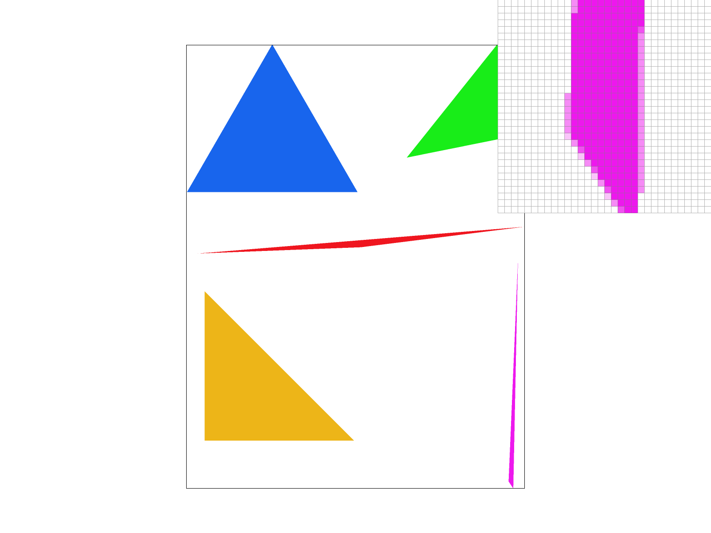
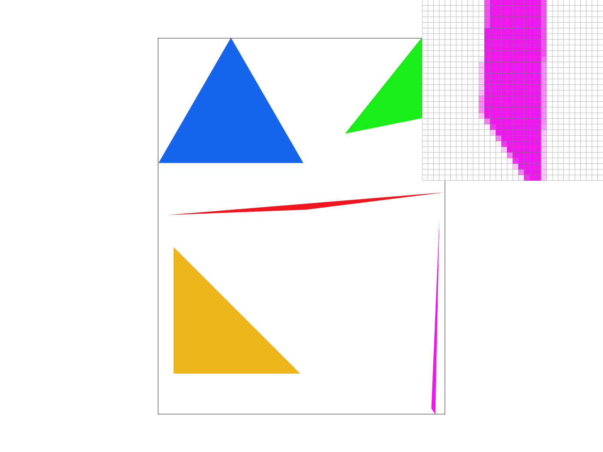
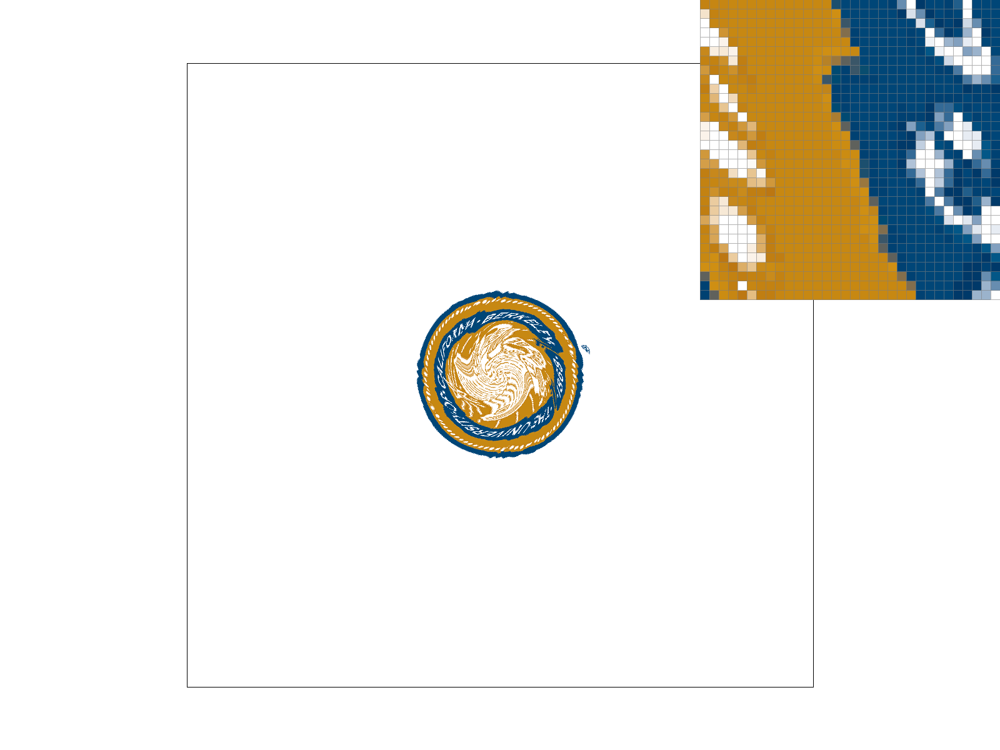
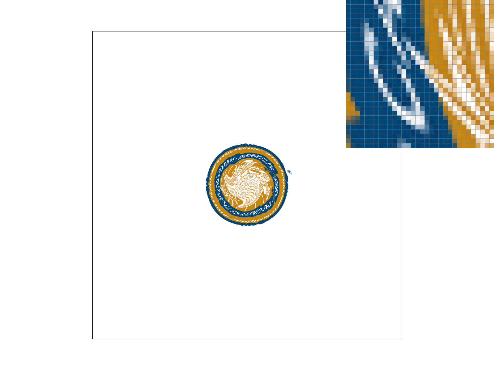
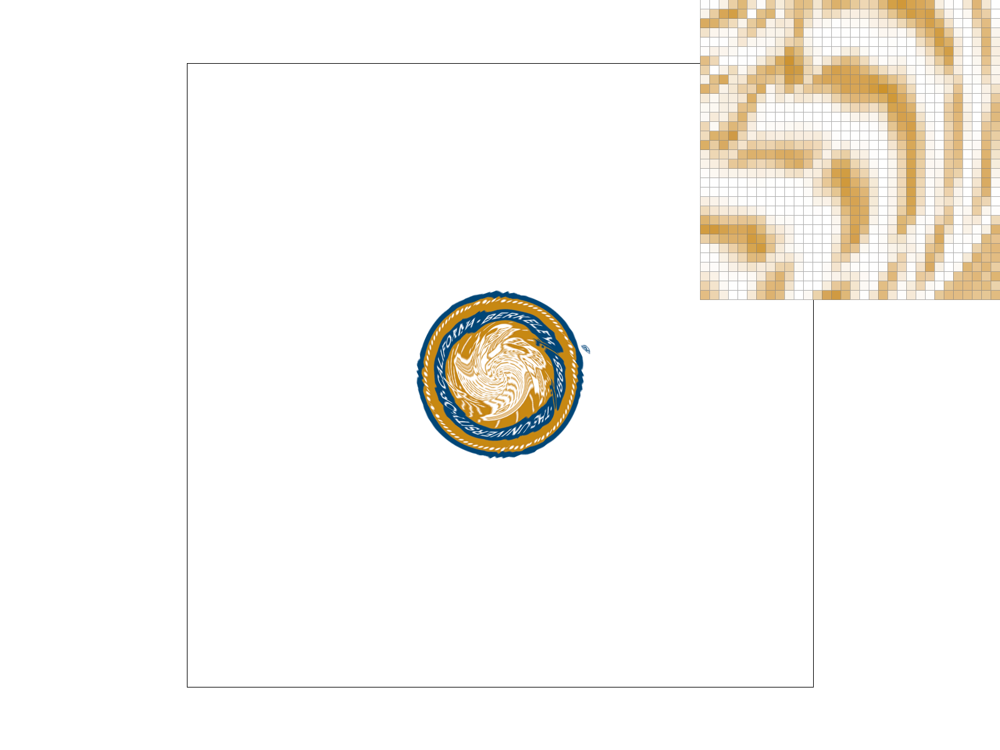
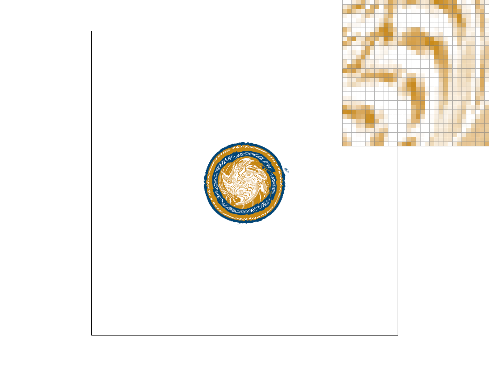

CS184/284A Spring 2026 Homework 1 Write-Up
Link to webpage: https://willc.ai/284-hw/
Overview
In this homework I implemented a software rasterizer that renders SVG files. The rasterizer supports triangle rasterization with supersampling for antialiasing, 2D transforms (translate, scale, rotate), barycentric coordinate interpolation for smooth color gradients, and texture mapping with both nearest-neighbor and bilinear pixel sampling as well as mipmap-based level sampling including trilinear filtering.
One of the most interesting things I learned was how supersampling works as an antialiasing technique: by taking multiple samples per pixel and averaging them, jagged triangle edges become smooth gradients. I also found it fascinating how mipmaps trade a small amount of extra memory (only 33% more) for dramatically better texture quality by pre-filtering the texture at multiple resolutions, avoiding aliasing artifacts that come from undersampling high-frequency texture content.
Task 1: Drawing Single-Color Triangles
To rasterize triangles, I use the following approach:
- Bounding box: Compute the axis-aligned bounding box of the three vertices, clamped to the screen dimensions. This ensures we only test pixels that could possibly be inside the triangle.
- Edge function test: For each pixel center \((x + 0.5, y + 0.5)\) within the bounding box, I evaluate three edge functions: \[ e_0 = (x_1 - x_0)(p_y - y_0) - (y_1 - y_0)(p_x - x_0) \] and similarly for edges 1 and 2. If all three edge functions are non-negative (CCW winding) or all non-positive (CW winding), the sample point is inside the triangle.
- Fill: If the point passes the test, I write the color to the sample buffer.
My algorithm is no worse than one that checks each sample within the bounding box because it iterates over exactly the bounding box pixels and nothing more. The bounding box is the smallest axis-aligned rectangle containing the triangle, so no pixel outside this box could ever be inside the triangle.
basic/test4.svg with default viewing parameters and pixel inspector. Note the aliasing (jaggies) on the magenta triangle edge visible in the pixel inspector.Task 2: Antialiasing by Supersampling
Supersampling is useful because it reduces aliasing artifacts (jaggies) at triangle edges. By sampling multiple points per pixel and averaging the results, edge pixels get intermediate colors that create a smooth visual transition instead of a sharp staircase pattern.
Algorithm and data structures: I use a sample_buffer of size \(\text{width} \times \text{height} \times \text{sample_rate}\) to store all sub-samples. For a sample rate of \(n\), each pixel is divided into a \(\sqrt{n} \times \sqrt{n}\) grid of sub-samples. Sub-sample \((s_i, s_j)\) within pixel \((x, y)\) is tested at position:
\[
\left(x + \frac{s_i + 0.5}{\sqrt{n}},\; y + \frac{s_j + 0.5}{\sqrt{n}}\right)
\]
Pipeline modifications:
set_sample_rate()andset_framebuffer_target(): Resize the sample buffer towidth * height * sample_rate.rasterize_triangle(): Test each sub-sample within each pixel against the triangle, writing individual sub-sample colors.fill_pixel(): For points and lines, fill all sub-samples of a pixel with the same color (no antialiasing needed for these primitives).resolve_to_framebuffer(): For each pixel, average all its sub-sample colors and write the result to the RGB framebuffer.
Screenshots of basic/test4.svg with pixel inspector over the magenta triangle edge at different sample rates:
 |
 |
|  |
|
At sample rate 1, the thin triangle corner shows harsh jagged edges because each pixel is either fully inside or fully outside the triangle. At sample rate 4 (2x2 grid), edge pixels can take on 5 possible intensity levels (0, 0.25, 0.5, 0.75, 1.0 of the triangle color), producing a smoother edge. At sample rate 16 (4x4 grid), there are 17 possible levels, creating an even smoother gradient at the edges. This is because supersampling estimates the fractional coverage of each pixel by the triangle.
Task 3: Transforms
I modified the cubeman to create a dancing/waving pose. The left arm is raised up (rotated 60 degrees) with the forearm bent back, as if waving hello. The right arm swings down and back. The legs are in a walking pose with the left leg stepping forward and the right leg back, with bent knees. The head is tilted slightly to the side. I also changed the color scheme to blue to make it look like a different character.
Task 4: Barycentric coordinates
Barycentric coordinates express a point's position relative to a triangle's three vertices as three weights \((\alpha, \beta, \gamma)\) where \(\alpha + \beta + \gamma = 1\). Each weight represents how "close" the point is to the corresponding vertex: at vertex \(v_0\), \(\alpha = 1\) and \(\beta = \gamma = 0\); at the center of the triangle, all three weights are roughly equal at \(\frac{1}{3}\).
Geometrically, the barycentric coordinate \(\alpha\) for a point \(P\) equals the ratio of the area of triangle \((P, v_1, v_2)\) to the area of the full triangle \((v_0, v_1, v_2)\). This makes barycentric coordinates a natural tool for interpolation: given a value at each vertex (e.g., color), the interpolated value at any interior point is simply the weighted sum \(\alpha \cdot c_0 + \beta \cdot c_1 + \gamma \cdot c_2\).
svg/basic/test7.svg at sample rate 1 — a color wheel created by interpolating red, green, and blue vertex colors across many triangles using barycentric coordinates.Task 5: "Pixel sampling" for texture mapping
Pixel sampling determines how we look up a color from a texture given continuous \((u, v)\) texture coordinates. Since texture coordinates generally don't land exactly on texel centers, we need a strategy to choose which texel(s) to use.
Nearest-neighbor sampling (P_NEAREST): Round the UV coordinates to the nearest texel and return that texel's color. This is fast but can produce blocky artifacts when the texture is magnified.
Bilinear sampling (P_LINEAR): Find the four texels surrounding the UV coordinate and compute a weighted average based on the fractional position. First lerp horizontally between the two pairs, then lerp vertically between the results. This produces smoother results at the cost of 4 texel reads and 3 lerps per sample.
In my implementation, rasterize_textured_triangle() computes barycentric coordinates for each sample point, interpolates the UV texture coordinates, then calls tex.sample() which dispatches to either sample_nearest() or sample_bilinear().
Comparison of nearest vs bilinear pixel sampling at different supersampling rates on a texture-mapped Berkeley seal:
|  |
 |
The largest difference between nearest and bilinear sampling occurs when the texture is magnified (viewed up close), where each texel maps to many screen pixels. Nearest sampling produces blocky, pixelated results because each screen pixel snaps to one texel. Bilinear sampling smoothly interpolates between neighboring texels, giving a blurred but much more visually pleasing result. At higher supersampling rates, the difference diminishes because the additional samples help average out the sharp texel transitions.
Task 6: "Level Sampling" with mipmaps for texture mapping
Level sampling selects an appropriate mipmap level (pre-filtered, downscaled version of the texture) based on how much the texture coordinates change across adjacent pixels. When a texture is minified (many texels map to one pixel), sampling from a lower-resolution mipmap avoids aliasing by using pre-averaged texel values.
Implementation: In rasterize_textured_triangle(), for each sample I compute the UV coordinates at three points: \((x, y)\), \((x+1, y)\), and \((x, y+1)\). In get_level(), I compute the difference vectors \(\Delta u, \Delta v\) for both the x and y directions, scale them by the texture dimensions, and compute:
\[
D = \log_2\left(\max\left(\sqrt{\left(\frac{\partial u}{\partial x}\right)^2 + \left(\frac{\partial v}{\partial x}\right)^2},\; \sqrt{\left(\frac{\partial u}{\partial y}\right)^2 + \left(\frac{\partial v}{\partial y}\right)^2}\right)\right)
\]
Sampling modes:
L_ZERO: Always sample from level 0 (full resolution). No extra computation needed.L_NEAREST: Round \(D\) to the nearest integer level and sample from that mipmap.L_LINEAR: Sample from the two adjacent levels \(\lfloor D \rfloor\) and \(\lceil D \rceil\), then linearly interpolate between the results (trilinear filtering when combined with bilinear pixel sampling).
Tradeoffs:
- Pixel sampling: Nearest is fastest (1 texel read) but blocky; bilinear is smoother (4 reads + lerps) but slower. No extra memory needed for either.
- Level sampling: Mipmaps use ~33% extra memory but dramatically reduce aliasing for minified textures.
L_ZEROis fastest,L_NEARESTadds a level computation, andL_LINEARdoubles the sampling work (two levels). - Supersampling: Most expensive in both memory (\(n\times\) the sample buffer) and computation (\(n\times\) the rasterization work), but provides the most general antialiasing that works on all edges, not just textures.
Comparison of different level and pixel sampling combinations on the Berkeley seal texture:
|  |
|
|  |